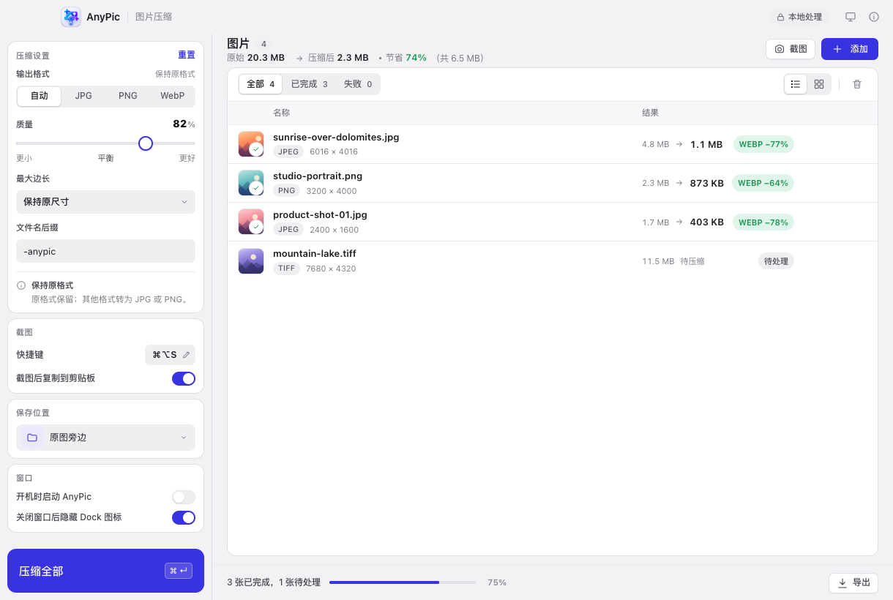

4.8 MB→1.1 MBWEBP −77%
智能压缩
JPG / PNG / WebP 保持原格式；GIF、BMP、TIFF 自动转为更通用的 JPG 或 PNG。质量 30–100 可调，可按长边缩放到 3840 / 2560 / 1920 / 1280 / 800 像素。
AnyPic 是一款跨平台图片压缩桌面应用。拖进来、点一下，体积小一大截——全程在你的电脑上完成，不上传、无账户、无遥测。
macOS · Windows 10/11 · Linux

无声 · 画面中的体积数字为示意
JPG / PNG / WebP 保持原格式；GIF、BMP、TIFF 自动转为更通用的 JPG 或 PNG。质量 30–100 可调，可按长边缩放到 3840 / 2560 / 1920 / 1280 / 800 像素。
重新编码反而更大？直接保留原图并标注「已是最优」，不拿更大的文件充数。
动画 GIF / WebP 转成动画 WebP，帧数、节奏、循环与透明都保留，绝不只留第一帧。
带透明的图片不会被悄悄压成黑底或白底。
随时框选截图，自动入队；预览里加背景、圆角、描边、投影与画布比例，一键生成成品。
输出写在原图旁边（加后缀）或你指定的文件夹，原文件一个字节都不动。
AnyPic 不上传图片、没有账户、没有遥测，图片处理完全在本机完成。应用唯一的联网行为是检查更新与下载安装包——只在启动和你点击时发生，且只访问 GitHub Releases。代码全部开源，可以自己核对。
JPG/JPEG · PNG · WebP · GIF （含动画） · BMP · TIFF/TIF
JPG · PNG · WebP；动画 GIF / WebP 输出为动画 WebP
单文件 250 MB，单批 500 张
HEIC · AVIF
输出为无损重编码，质量滑杆对 PNG 不生效——这是格式本身的限制，我们如实展示。
重新编码会移除 EXIF / XMP（含拍摄信息），方向会在处理前自动校正。
安装包未经过 Apple 公证。首次打开被 Gatekeeper 拦截时，到「系统设置 → 隐私与安全性」点「仍要打开」即可。
macOS 需要在「系统设置 → 隐私与安全性 → 屏幕录制」里允许 AnyPic。应用侧栏有直达入口。
只为检查更新和下载安装包，且只访问 GitHub Releases。你的图片永远不会离开电脑。
运行需要 WebKitGTK（libwebkit2gtk-4.1）；截图需要 gnome-screenshot、spectacle 或 grim + slurp + wl-copy 之一。
免费且开源。